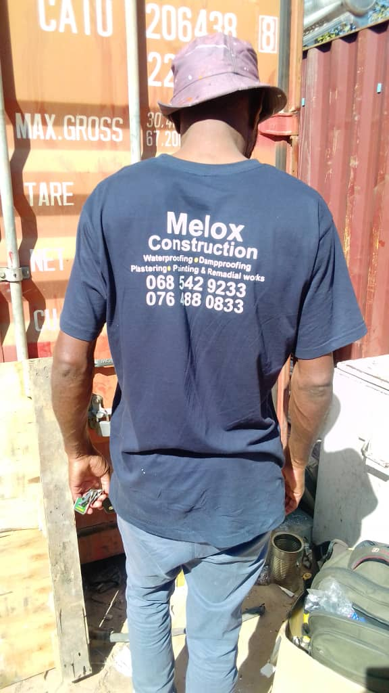

Melox Construction is just one of three enterprises envisaged in the above. The company started with humble beginnings and has grown into the thriving company it is today due to its successful operation. The members of the business have already demonstrated their commitment to excellence in the business world. The company has also been involved in a series of successful technical projects in Johannesburg, which include demographic, surveying and soil testing and building.

The business was incorporated as Melox Construction in 2012.
Meluleki T Masuku (CEO- Construction, Civil & Contracts), Meluleki T Masuku (Communications & Marketing) and Nyasha
Dambadza (Project Manager) are senior management team.
They are very well experienced in the type of work that they are presently carrying on with. Their tremendous knowledge in the
administration and management was gained through their considerable involvement with the business of high reputation
standards and experience.
The demands on the corporate sector to contribution towards quality in South Africa construction industry have escalated
tremendously over the past years. The focus on the business economic empowerment is on reaching targets, one being to create
sustainable , affordable, high quality standards business.
These policies aimed to make it easier for the people to gain access to capital and viable business opportunities.